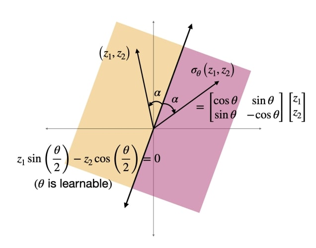
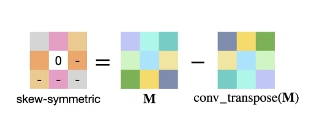
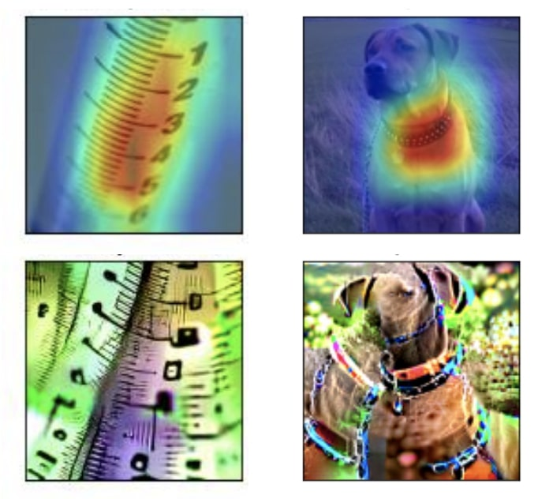
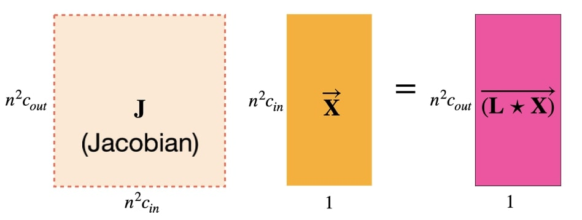
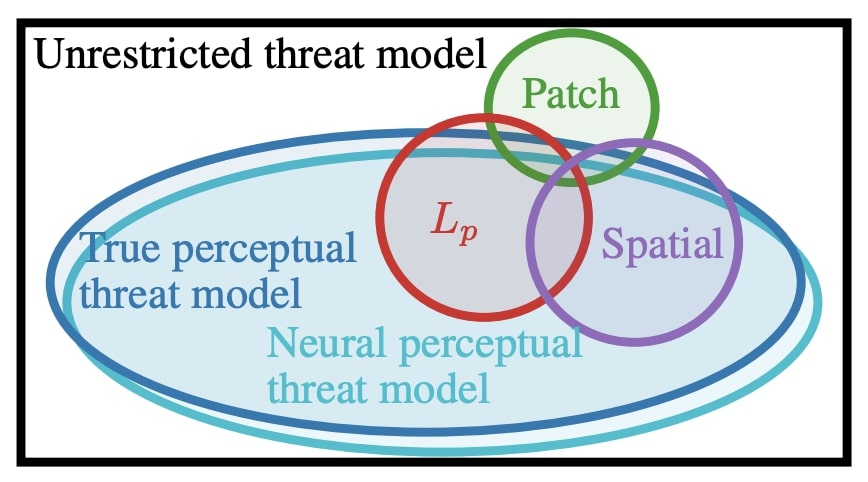
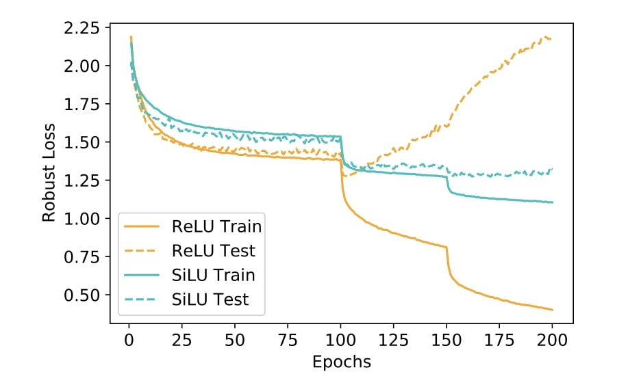
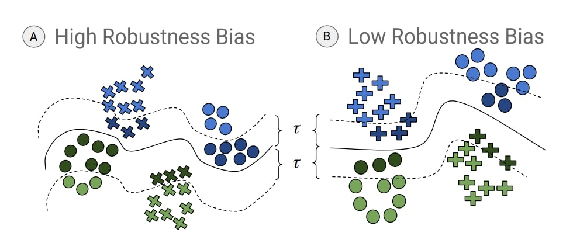
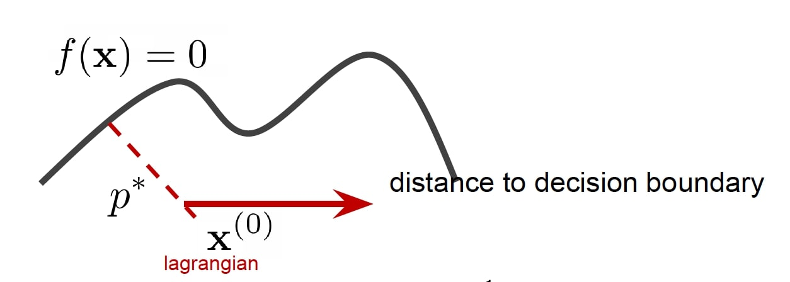
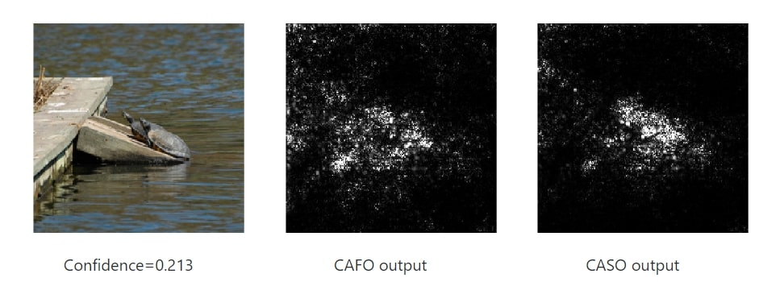

News
- I gave a talk at the London Machine Learning meetup.
- Two papers accepted at ICLR 2022.
|
2022
|
|

|
Improved deterministic l2 robustness on CIFAR-10 and CIFAR-100
Sahil Singla, Surbhi Singla, Soheil Feizi.
ICLR, 2022 (spotlight)
pdf
| abstract
| bibtex
| code
Training convolutional neural networks (CNNs) with a strict Lipschitz constraint under the l2 norm is useful for provable adversarial robustness, interpretable gradients and stable training. While 1-Lipschitz CNNs can be designed by enforcing a 1-Lipschitz constraint on each layer, training such networks requires each layer to have an orthogonal Jacobian matrix (for all inputs) to prevent the gradients from vanishing during backpropagation. A layer with this property is said to be Gradient Norm Preserving (GNP). In this work, we introduce a procedure to certify the robustness of 1-Lipschitz CNNs by relaxing the orthogonalization of the last linear layer of the network that significantly advances the state of the art for both standard and provable robust accuracies on CIFAR-100 (gains of 4.80% and 4.71%, respectively). We further boost their robustness by introducing (i) a novel Gradient Norm preserving activation function called the Householder activation function (that includes every GroupSort activation) and (ii) a certificate regularization. On CIFAR-10, we achieve significant improvements over prior works in provable robust accuracy (5.81%) with only a minor drop in standard accuracy (−0.29%).
@inproceedings{
singla2022improved,
title={Improved deterministic l2
robustness on {CIFAR}-10 and
{CIFAR}-100},
author={Sahil Singla and
Surbhi Singla and Soheil Feizi},
booktitle={International Conference
on Learning Representations},
year={2022},
url={https://openreview.net/forum?id=tD7eCtaSkR}
}
|
|
|
Salient ImageNet: How to discover spurious features in Deep Learning?
Sahil Singla, Soheil Feizi.
ICLR, 2022
pdf
| abstract
| bibtex
| code
A key reason for the lack of reliability of deep neural networks in the real world is their heavy reliance on spurious input features that are not essential to the true label. Focusing on image classifications, we define core attributes as the set of visual features that are always a part of the object definition while spurious attributes are the ones that are likely to co-occur with the object but not a part of it (e.g., attribute "fingers" for class "band aid"). Traditional methods for discovering spurious features either require extensive human annotations (thus, not scalable), or are useful on specific models. In this work, we introduce a general framework to discover a subset of spurious and core visual attributes used in inferences of a general model and localize them on a large number of images with minimal human supervision. Our methodology is based on this key idea: to identify spurious or core visual attributes used in model predictions, we identify spurious or core neural features (penultimate layer neurons of a robust model) via limited human supervision (e.g., using top 5 activating images per feature). We then show that these neural feature annotations generalize extremely well to many more images without any human supervision. We use the activation maps for these neural features as the soft masks to highlight spurious or core visual attributes. Using this methodology, we introduce the Salient Imagenet dataset containing core and spurious masks for a large set of samples from Imagenet. Using this dataset, we show that several popular Imagenet models rely heavily on various spurious features in their predictions, indicating the standard accuracy alone is not sufficient to fully assess model' performance specially in safety-critical applications.
@inproceedings{
singla2022salient,
title={Salient ImageNet: How to
discover spurious features in
Deep Learning?},
author={Sahil Singla and
Soheil Feizi},
booktitle={International
Conference on Learning
Representations},
year={2022},
url={https://openreview.net/forum?id=XVPqLyNxSyh}
}
|
2021
|
|

|
Skew Orthogonal Convolutions
Sahil Singla, Soheil Feizi.
ICML, 2021
pdf
| abstract
| bibtex
| code
Training convolutional neural networks with a Lipschitz constraint under the l2 norm is useful for provable adversarial robustness, interpretable gradients, stable training, etc. While 1-Lipschitz networks can be designed by imposing a 1-Lipschitz constraint on each layer, training such networks requires each layer to be gradient norm preserving (GNP) to prevent gradients from vanishing. However, existing GNP convolutions suffer from slow training, lead to significant reduction in accuracy and provide no guarantees on their approximations. In this work, we propose a GNP convolution layer called Skew Orthogonal Convolution (SOC) that uses the following mathematical property: when a matrix is {\it Skew-Symmetric}, its exponential function is an {\it orthogonal} matrix. To use this property, we first construct a convolution filter whose Jacobian is Skew-Symmetric. Then, we use the Taylor series expansion of the Jacobian exponential to construct the SOC layer that is orthogonal. To efficiently implement SOC, we keep a finite number of terms from the Taylor series and provide a provable guarantee on the approximation error. Our experiments on CIFAR-10 and CIFAR-100 show that SOC allows us to train provably Lipschitz, large convolutional neural networks significantly faster than prior works while achieving significant improvements for both standard and certified robust accuracies.
@inproceedings{
singlafeiziSOC2021,
title={Skew Orthogonal Convolutions},
author={Singla, Sahil and Feizi, Soheil},
booktitle={Proceedings
of the 38th International
Conference on Machine
Learning},
year={2021},
url={https://proceedings.mlr.press/v139/singla21a.html}
}
|
|

|
Understanding Failures of Deep Networks via Robust Feature Extraction
Sahil Singla, Besmira Nushi, Shital Shah, Ece Kamar, Eric Horvitz.
CVPR, 2021 (Oral)
pdf
| abstract
| bibtex
| code
| talk
Traditional evaluation metrics for learned models that report aggregate scores over a test set are insufficient for surfacing important and informative patterns of failure over features and instances. We introduce and study a method aimed at characterizing and explaining failures by identifying visual attributes whose presence or absence results in poor performance. In distinction to previous work that relies upon crowdsourced labels for visual attributes, we leverage the representation of a separate robust model to extract interpretable features and then harness these features to identify failure modes. We further propose a visualization method aimed at enabling humans to understand the meaning encoded in such features and we test the comprehensibility of the features. An evaluation of the methods on the ImageNet dataset demonstrates that: (i) the proposed workflow is effective for discovering important failure modes, (ii) the visualization techniques help humans to understand the extracted features, and (iii) the extracted insights can assist engineers with error analysis and debugging.
@inproceedings{
singlaCVPR2021,
title = {Understanding Failures
of Deep Networks via Robust Feature
Extraction},
author = {Sahil Singla and Besmira
Nushi and Shital Shah and Ece Kamar
and Eric Horvitz},
booktitle = {{IEEE} Conference on
Computer Vision and Pattern
Recognition, {CVPR} 2021},
publisher = {Computer Vision
Foundation / {IEEE}},
year = {2021},
}
|
|

|
Fantastic Four: Differentiable and Efficient Bounds on Singular Values of Convolution Layers
Sahil Singla, Soheil Feizi.
ICLR, 2021
pdf
| abstract
| bibtex
| code
In deep neural networks, the spectral norm of the Jacobian of a layer bounds the factor by which the norm of a signal changes during forward/backward propagation. Spectral norm regularizations have been shown to improve generalization, robustness and optimization of deep learning methods. Existing methods to compute the spectral norm of convolution layers either rely on heuristics that are efficient in computation but lack guarantees or are theoretically-sound but computationally expensive. In this work, we obtain the best of both worlds by deriving {\it four} provable upper bounds on the spectral norm of a standard 2D multi-channel convolution layer. These bounds are differentiable and can be computed efficiently during training with negligible overhead. One of these bounds is in fact the popular heuristic method of Miyato et al. (multiplied by a constant factor depending on filter sizes). Each of these four bounds can achieve the tightest gap depending on convolution filters. Thus, we propose to use the minimum of these four bounds as a tight, differentiable and efficient upper bound on the spectral norm of convolution layers. We show that our spectral bound is an effective regularizer and can be used to bound either the lipschitz constant or curvature values (eigenvalues of the Hessian) of neural networks. Through experiments on MNIST and CIFAR-10, we demonstrate the effectiveness of our spectral bound in improving generalization and provable robustness of deep networks.
@inproceedings{
singla2021fantastic,
title={Fantastic Four: Differentiable
and Efficient Bounds on Singular
Values of Convolution Layers},
author={Sahil Singla and Soheil
Feizi},
booktitle={International Conference
on Learning Representations},
year={2021},
url={https://openreview.net/forum?id=JCRblSgs34Z}
}
|
|

|
Perceptual Adversarial Robustness: Defense Against Unseen Threat Models
Cassidy Laidlaw, Sahil Singla, Soheil Feizi.
ICLR, 2021
pdf
| abstract
| bibtex
| code
A key challenge in adversarial robustness is the lack of a precise mathematical characterization of human perception, used in the very definition of adversarial attacks that are imperceptible to human eyes. Most current attacks and defenses try to avoid this issue by considering restrictive adversarial threat models such as those bounded by L2 or L∞ distance, spatial perturbations, etc. However, models that are robust against any of these restrictive threat models are still fragile against other threat models. To resolve this issue, we propose adversarial training against the set of all imperceptible adversarial examples, approximated using deep neural networks. We call this threat model the neural perceptual threat model (NPTM); it includes adversarial examples with a bounded neural perceptual distance (a neural network-based approximation of the true perceptual distance) to natural images. Through an extensive perceptual study, we show that the neural perceptual distance correlates well with human judgements of perceptibility of adversarial examples, validating our threat model.
Under the NPTM, we develop novel perceptual adversarial attacks and defenses. Because the NPTM is very broad, we find that Perceptual Adversarial Training (PAT) against a perceptual attack gives robustness against many other types of adversarial attacks. We test PAT on CIFAR-10 and ImageNet-100 against five diverse adversarial attacks. We find that PAT achieves state-of-the-art robustness against the union of these five attacks, more than doubling the accuracy over the next best model, without training against any of them. That is, PAT generalizes well to unforeseen perturbation types. This is vital in sensitive applications where a particular threat model cannot be assumed, and to the best of our knowledge, PAT is the first adversarial training defense with this property.
@inproceedings{
laidlaw2021perceptual,
title={Perceptual Adversarial
Robustness: Defense Against Unseen
Threat Models},
author={Cassidy Laidlaw and Sahil
Singla and Soheil Feizi},
booktitle={International Conference
on Learning Representations},
year={2021},
url={https://openreview.net/forum?id=dFwBosAcJkN}
}
|
|

|
Low Curvature Activations Reduce Overfitting in Adversarial Training
Vasu Singla, Sahil Singla, Soheil Feizi, David Jacobs.
ICCV, 2021
pdf
| abstract
| bibtex
| code
Adversarial training is one of the most effective defenses against adversarial attacks. Previous works suggest that overfitting is a dominant phenomenon in adversarial training leading to a large generalization gap between test and train accuracy in neural networks. In this work, we show that the observed generalization gap is closely related to the choice of the activation function. In particular, we show that using activation functions with low (exact or approximate) curvature values has a regularization effect that significantly reduces both the standard and robust generalization gaps in adversarial training. We observe this effect for both differentiable/smooth activations such as SiLU as well as non-differentiable/non-smooth activations such as LeakyReLU. In the latter case, the "approximate" curvature of the activation is low. Finally, we show that for activation functions with low curvature, the double descent phenomenon for adversarially trained models does not occur.
@inproceedings{
Singla_2021_ICCV,
author = {Singla, Vasu and Singla, Sahil and Feizi, Soheil and Jacobs, David},
title = {Low Curvature Activations Reduce Overfitting in Adversarial Training},
booktitle = {Proceedings of the IEEE/CVF International Conference on Computer Vision (ICCV)},
month = {October},
year = {2021},
pages = {16423-16433}
}
|
|

|
Fairness Through Robustness: Investigating Robustness Disparity in Deep Learning
Vedant Nanda, Samuel Dooley, Sahil Singla, Soheil Feizi, John P. Dickerson.
FAccT, 2021
pdf
| abstract
| bibtex
| code
Deep neural networks (DNNs) are increasingly used in real-world applications (e.g. facial recognition). This has resulted in concerns about the fairness of decisions made by these models. Various notions and measures of fairness have been proposed to ensure that a decision-making system does not disproportionately harm (or benefit) particular subgroups of the population. In this paper, we argue that traditional notions of fairness that are only based on models' outputs are not sufficient when the model is vulnerable to adversarial attacks. We argue that in some cases, it may be easier for an attacker to target a particular subgroup, resulting in a form of \textit{robustness bias}. We show that measuring robustness bias is a challenging task for DNNs and propose two methods to measure this form of bias. We then conduct an empirical study on state-of-the-art neural networks on commonly used real-world datasets such as CIFAR-10, CIFAR-100, Adience, and UTKFace and show that in almost all cases there are subgroups (in some cases based on sensitive attributes like race, gender, etc) which are less robust and are thus at a disadvantage. We argue that this kind of bias arises due to both the data distribution and the highly complex nature of the learned decision boundary in the case of DNNs, thus making mitigation of such biases a non-trivial task. Our results show that robustness bias is an important criterion to consider while auditing real-world systems that rely on DNNs for decision making. Code to reproduce all our results can be found here: this https URL.
@inproceedings{
nanda2021fairness,
author = {Nanda, Vedant and Dooley, Samuel and Singla, Sahil and Feizi, Soheil and Dickerson, John P.},
title = {Fairness Through Robustness: Investigating Robustness Disparity in Deep Learning},
year = {2021},
isbn = {9781450383097},
publisher = {Association for Computing Machinery},
address = {New York, NY, USA},
url = {https://doi.org/10.1145/3442188.3445910},
doi = {10.1145/3442188.3445910},
booktitle = {Proceedings of the 2021 ACM Conference on Fairness, Accountability, and Transparency},
pages = {466–477},
numpages = {12},
location = {Virtual Event, Canada},
series = {FAccT '21}
}
|
2020
|
|

|
Second-Order Provable Defenses against Adversarial Attacks
Sahil Singla, Soheil Feizi.
ICML, 2020
pdf
| abstract
| bibtex
| code
Understanding proper distance measures between distributions is at the core of several learning tasks
such as generative models, domain adaptation, clustering, etc. In this work, we focus on mixture
distributions that arise naturally in several application domains where the data contains different
sub-populations. For mixture distributions, established distance measures such as the Wasserstein
distance do not take into account imbalanced mixture proportions. Thus, even if two mixture
distributions have identical mixture components but different mixture proportions, the Wasserstein
distance between them will be large. This often leads to undesired results in distance-based learning
methods for mixture distributions. In this paper, we resolve this issue by introducing the Normalized
Wasserstein measure. The key idea is to introduce mixture proportions as optimization variables,
effectively normalizing mixture proportions in the Wasserstein formulation. Using the proposed normalized
Wasserstein measure leads to significant performance gains for mixture distributions with imbalanced
mixture proportions compared to the vanilla Wasserstein distance. We demonstrate the effectiveness
of the proposed measure in GANs, domain adaptation and adversarial clustering in several benchmark
datasets.
@inproceedings{
singlaCRT2020ICML,
title = {Second-Order Provable Defenses against Adversarial Attacks},
author = {Singla, Sahil and Feizi, Soheil},
booktitle = {Proceedings of the 37th International Conference on Machine Learning},
year = {2020},
url = {https://proceedings.mlr.press/v119/singla20a.html}
}
|
2019
|
|

|
Understanding Impacts of High-Order Loss Approximations and Features in Deep Learning Interpretation
Sahil Singla, Eric Wallace, Shi Feng, Soheil Feizi.
ICML, 2019
pdf
| abstract
| bibtex
| code
Current saliency map interpretations for neural networks generally rely on two key assumptions. First, they use first-order approximations of the loss function, neglecting higher-order terms such as the loss curvature. Second, they evaluate each feature’s importance in isolation, ignoring feature interdependencies. This work studies the effect of relaxing these two assumptions. First, we characterize a closed-form formula for the input Hessian matrix of a deep ReLU network. Using this formula, we show that, for classification problems with many classes, if a prediction has high probability then including the Hessian term has a small impact on the interpretation. We prove this result by demonstrating that these conditions cause the Hessian matrix to be approximately rank one and its leading eigenvector to be almost parallel to the gradient of the loss. We empirically validate this theory by interpreting ImageNet classifiers. Second, we incorporate feature interdependencies by calculating the importance of group-features using a sparsity regularization term. We use an L0 - L1 relaxation technique along with proximal gradient descent to efficiently compute group-feature importance values. Our empirical results show that our method significantly improves deep learning interpretations.
@inproceedings{
singlaCASO2019,
title = {Understanding Impacts of High-Order Loss Approximations and Features in Deep Learning Interpretation},
author = {Singla, Sahil and Wallace, Eric and Feng, Shi and Feizi, Soheil},
booktitle = {Proceedings of the 36th International Conference on Machine Learning},
year = {2019},
url = {https://proceedings.mlr.press/v97/singla19a.html}
}
|
Selected Awards
- Outstanding Research Assistant Award. Awarded to top 2% graduate research assistants every year by the Graduate School at the University of Maryland.
- Dean's Fellowship. Awarded to only two students in the first and second year in the Computer Science department at University of Maryland.
|
|
{kind=link}